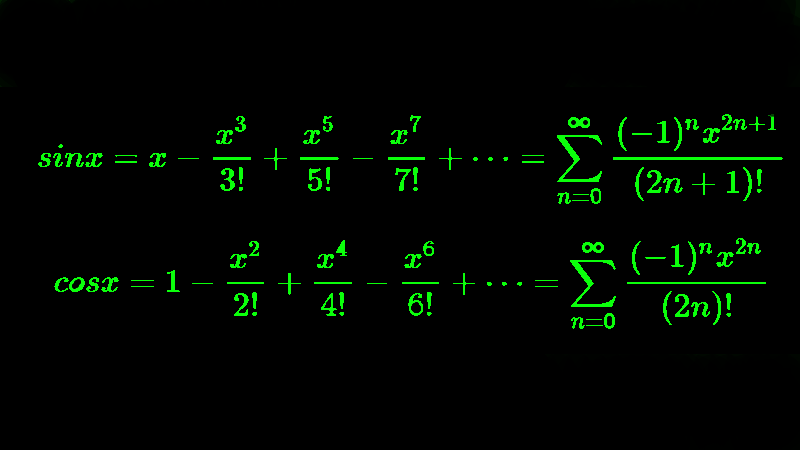

BLOK 1
Z nasledovných úloh neriešte všetky
Ako urobiť BLOK 1?
Úlohy nemusia byť vypracované všetky, stačí získať z nich maximálne 10 bodov, čiže si vyberte takú kombináciu, aby ste dokopy získali aspoň 10. Úlohy už riešte vo vývojovom prostredí Visual Studio, iba úvodná úloha bola riešená pomocou príkazového riadka. Návod, ako si založiť projekt je v sekcii Návody.
Všetky úlohy musia byť vypracované ako samostatné funkcie v jednom projekte.
Zadania je treba cvičiacim odovzdávať priebežne, po štvrtom týždni semestra už úlohy z tohto bloku odovzdávať nebude možné. V prípade čiastočného splnenia úlohy získate za danú úlohu menej bodov.
Na získanie zápočtu potrebujete minimálne polovicu bodov z každého bloku.
Je kľúčové uvedomiť si, že Visual Studio Vám v zásade umožňuje to isté, čo kompilátor gcc (úvodné cvičenie), ale ponúka aj iné nástroje. V zásade sa však pri kompilácii deje vždy to isté – z Vášho zdrojového súboru sa vytvára súbor spustiteľný a vykonateľný počítačom. Počítač vie pracovať len s jednotkami a nulami. Z „jeho pohľadu“ je všetko len postupnosť jednotiek a núl, napríklad 10101111000011000100. Preto aj keď z Vášho pohľadu pracujete s číslami alebo písmenami, počítač vždy „vidí“ len jednotky a nuly. Preto je úplne kľúčové, aby ste vedeli pracovať s dvojkovou sústavou
Úloha 1.1 (2b)
Napíšte program, ktorý zobrazí nasledovné dva vstupy: číslo 33777 aj ASCII kód znaku ‘X’ (čiže oba tieto vstupy) – v dvojkovej, desiatkovej a šestnástkovej sústave. Program musí fungovať tak, aby bolo vstupy možné meniť (stačí v zdrojovom súbore).
Tip:
- Použite čo najmenší počet premenných; využite možnosti, ktoré poskytuje funkcia printf, prevod do dvojkovej sústavy však budete musieť naprogramovať.
Úloha 1.2 (2b)
Napíšte program, ktorý vykoná rotačný posun bitov doprava pre celé kladné číslo. Používateľ zadá číslo, počet bitov na posun a smer posunu.
Príklad:
- Číslo 9 (v binárnej forme 1001) pri rotačnom posune doprava o 1 bit sa stane 1100.
Tip 1.:
- Rotačný posun bitov (tiež známy ako cyklický posun) je operácia, pri ktorej sa bity v binárnom čísle posúvajú o určitý počet miest doprava alebo doľava, pričom bity, ktoré “vypadnú” na jednom konci, sa vrátia na opačný koniec. Začnite teda operáciou bitového posunu. Pred programovaním si pár príkladov napíšte na papier.
Tip 2.:
Tip 3.:
- Použite dátový typ unsigned int (celé číslo bez znamienka).
- Počet bitov tohto dátového typu získate nasledovne:
- int bit_count = sizeof(unsigned int) * 8
Úloha 1.3 (2b)
Napíšte program, ktorý spočíta počet jednotiek (nastavených bitov) v binárnej reprezentácii zadaného čísla.
Príklad:
- Vstup: 13 (binárne 1101)
- Výstup: 3 jednotky
Príklad:
- Využite bitový AND a bitový posun. Ako použiť bitové operácie v jazyku C sa dozviete TU. Zaujímavé video na túto tému je TU.

Úloha 1.4 (3b)
Napíšte program, ktorý zistí a vypíše na obrazovku strojové epsilon pre dátové typy float a double. Zároveň vypíšte aj hodnoty __FLT_EPSILON__ a __DBL_EPSILON__ zadefinované vo float.h. Pripomenutie – slovné spojenie dátový typ hovorí o tom, ako kompilátor „rozumie“ jednotkám a nulám, s ktorými pracujete. Identifikujete tak, či pracujete s celými číslami, písmenami, reálnymi číslami a podobne.
Na získanie plného počtu bodov musíte cvičiacemu vedieť vysvetliť, čo je to strojové epsilon a tiež akúkoľvek časť Vášho kódu.
Definícia:
- Strojové epsilon je najmenšie také číslo, ktoré po pripočítaní k jednotke dá niečo iné ako jednotku. Zjednodušene povedané, pomocou obmedzeného počtu jednotiek a núl viete vyjadriť veľmi veľmi veľa čísel, ale stále je ich konečný počet. Preto sa zákonite stane, že „vedľa“ čísla jeden existuje aj také reálne číslo, ktoré Váš počítač vyjadriť nevie.
Iná Definícia:
- Strojové epsilon je „vzdialenosť“ medzi číslom 1 a jeho bezprostredným pravým susedom.
- Pracujeme v dvojkovej sústave (desiatková je v zátvorke):
- potom kvôli obmedzenej presnosti počítača pri istom počte desatinných miest nastane situácia, že 1 + 0,0…001 = 1 (namiesto správneho 1,0…001). Potom to predošlé číslo 0,0…01 sa nazýva strojové epsilon. Je zrejmé, že na rôznych počítačoch môže byť jeho hodnota rôzna. Strojové epsilon však nie je najmenšie číslo v danej reprezentácii.
1 + 0,1 = 1,1 (1 + 1/2 = 1,5)
1 + 0,01 = 1,01 (1 + 1/4 = 1,25)
1 + 0,001 = 1,001 (1 + 1/8 = 1,125)
Tip 1.:
- Strojové epsilon hľadáte tak, že začnete deliť číslo jeden. Nedelíte však desiatimi, ale dvomi, pretože pracujeme v dvojkovej sústave!
Tip 2.:
- Porovnajte si výsledok s konštantami FLT_EPSILON a DBL_EPSILON, (alebo __FLT_EPSILON__ a __DBL_EPSILON__) zadefinovanými vo float.h. Ak vám vypočítané hodnoty nesedia, skúste vypnúť všetky optimalizácie. Ak máte možnosť, vyskúšajte program aj na inej platforme ako Win32/Intel.
Tip 3.:
- Ak vám to stále nevychádza, možno nájdete vysvetlenie TU.
Úloha 1.5 (4b)
Napíšte program na výpočet funkcie sin(x) alebo cos(x) pomocou rozvoja do Taylorovho radu v okolí bodu 0. Inými slovami, budete programovať funkciu sínus alebo kosínus sami, bez toho, aby ste použili iné existujúce riešenie. Uhly môžete zadávať v stupňoch alebo v radiánoch.
Program musí fungovať pre akékoľvek vstupy, napr. -4500° alebo +8649°
Funkcia bude mať dva argumenty:
- float sinus(float radians, float epsilon);
Na Vašu vlastnú implementáciu použite jeden z nasledovných vzťahov (stačí programovať buď sínus alebo kosínus, netreba obe):
Aby ste získali plný počet bodov, funkcia musí fungovať správne pre akýkoľvek vstupný uhol (pozri Tip 3).
Správnosť Vašich výsledkov si viete skontrolovať porovnaním s výsledkami, čo Vám dá bežná kalkulačka.
Tip 1.:
- Samozrejme, že nemôžete počítať súčet nekonečného radu donekonečna. Vidíte (ak nie, tak si pozrite v programe), že členy sa stále zmenšujú, takže isto raz nastane taká situácia, že keď pripočítate ďalší člen, výsledok to už nijako nezmení (viď úloha 1.3 – strojové epsilon). Výpočet však môžete skončiť ešte skôr – keď sa výsledok v dvoch po sebe idúcich iteráciách zmení o menej ako epsilon (vopred zadané, dostatočne malé číslo, napr. 0.000001).
Tip 2.:
- Je dôležité uvedomiť si, že epsilon nevyjadruje presnosť vypočítanej aproximácie.
Tip 3.:
- Uvedomte si, že uvedené rady aproximujú dobre len v okolí nuly, čo znamená, že pre väčšie vstupné uhly Vám to „prestane fungovať“ (viď. obrázok nižšie – čím väčší stupeň polynómu, tým lepšia aproximácia).
Pre ostatné argumenty využite periodicitu funkcie sínus, resp. kosínus.
Úloha 1.6 (4b)
Napíšte program na výpočet kontrolnej sumy (checksum) pre zadaný riadok tzv. IntelHex súboru.
Na získanie plného počtu bodov musíte cvičiacemu vedieť vysvetliť aj jednotlivé časti IntelHex riadka (viď. dolu), a tiež akúkoľvek časť Vášho kódu.
Definícia:
- Kontrolný súčet sa vypočíta ako dvojkový doplnok súčtu jednotlivých bajtov od začiatku riadku až po kontrolný súčet.
Príklad:
- Ak zadáte tento reťazec:
- :10010000214601360121470136007EFE09D21901XX
- Musí vám vyjsť namiesto XX kontrolný súčet 40.
- Splnenie úlohy demonštrujte výpočtom kontrolných súm napr. pre tieto reťazce:
- :100010000C9445000C9445000C9445000C944500xx
- :100020000C9445000C9445000C9445000C944500xx
- :100030000C9445000C9445000C9445000C944500xx
- :100040000C9445000C9445000C9445000C944500xx
Čo je to Intel HEX formát?
- Intel HEX formát je bežný ASCII textový súbor, ktorého riadky tvoria tzv. záznamy, ktoré sú tvorené hexadecimálnymi číslami (ak náhodou stále netušíte, čo je to ASCII, tak si to veľmi rýchlo vygooglite a vstrebajte ;). Tie reprezentujú dáta v pamäti, či už konštanty, alebo strojový kód. Tento formát sa používa na prenos skompilovaných programov alebo dát do pamätí typu EPROM, FLASH, EEPROM a pod. Väčšina programovacích zariadení tento formát podporuje.
- Každý riadok IntelHex súboru predstavuje jeden záznam a skladá sa zo šiestich častí:
:LLAAAATT[DD…]CC
- : Znak začiatku (start), jeden bajt, jeden ASCII znak dvojbodka ‘:’.
- LL Počet bajtov, dve hexa číslice. Predstavuje počet bajtov (párov hexa znakov) v jednom zázname. Obvyklá hodnota je 16 (0x10).
- AAAA Adresa, štyri hexa znaky, predstavujú 16-bitovú adresu od ktorej sa majú nasledujúce data ukladať do pamäti. Adresa je v tvare big endian.
- TT Typ záznamu, dva bajty – znaky od 00 do 05, určujú význam nasledujúcich dát. Typ 00 sú čisté data, typ 01 je koniec záznamu, posledný riadok. Ostatné sú špeciálne typy.
- DD Dáta, postupnosť n bajtov samotných dát.
- CC Kontrolný súčet (checksum), dva hexa znaky – je to dvojkový doplnok súčtu hodnôt celého záznamu okrem polí 1 a 6 (: a kontrolný súčet).

vysvetlenie
- 10 (t.j. 16 dekadicky) je počet datových bajtov v zázname.
- 0100 je adresa, na ktorú sa tieto dáta majú začať zapisovať.
- 00 znamená záznam typu 00 (t.j. sú to čisté dáta).
- 2146 … toto sú tie dáta.
- 40 je kontrolný súčet celého záznamu.
Výpočet kontrolného súčtu
- 10 + 01 + 00 + 00 + 21 + 46 + 01 + 36 + 01 + 21 + 47 + 01 + 36 + 00 + 7E + FE + 09 + D2 + 19 + 01 = 3C0
- Súčet mod 256: C0
- Komplement: 3F
- Kontrolný súčet: 40 (dvojkový doplnok je komplement + 1), čiže FF – C0 + 1, vyskúšajte si to na programátorskej kalkulačke
Skúšobné príklady:
- :100000000C942A000C9445000C9445000C94450077
- :100010000C9445000C9445000C9445000C9445004C
- :100020000C9445000C9445000C9445000C9445003C
- :100030000C9445000C9445000C9445000C9445002C
- :100040000C9445000C9445000C9445000C9445001C
- :100050000C94450011241FBECFE5D4E0DEBFCDBF18
- :1000600010E0A0E6B0E0EEEAF0E002C005900D92EC
- :10007000A036B107D9F710E0A0E6B0E001C01D92AC
- :10008000A036B107E1F70C9447000C940000CFE5CF
- :10009000D4E0DEBFCDBF80EF8ABB8FEF8BBB17BA3A
- :0E00A00088BBB79B02C0DD9AFCCFDD98FACF7B
- :00000001FF